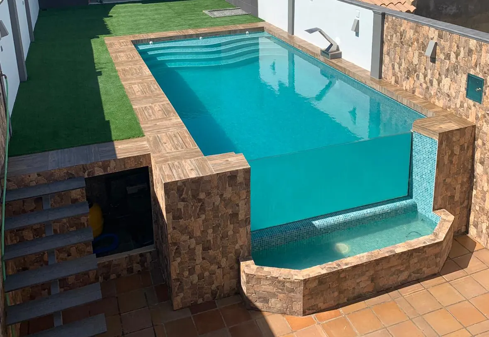
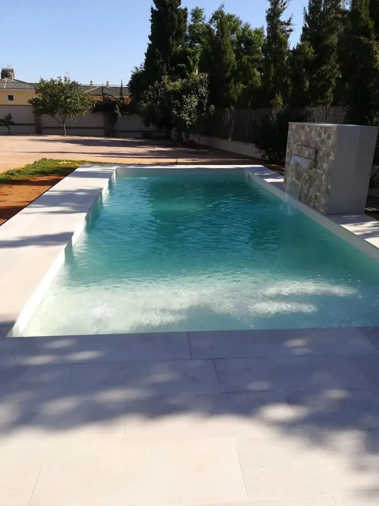
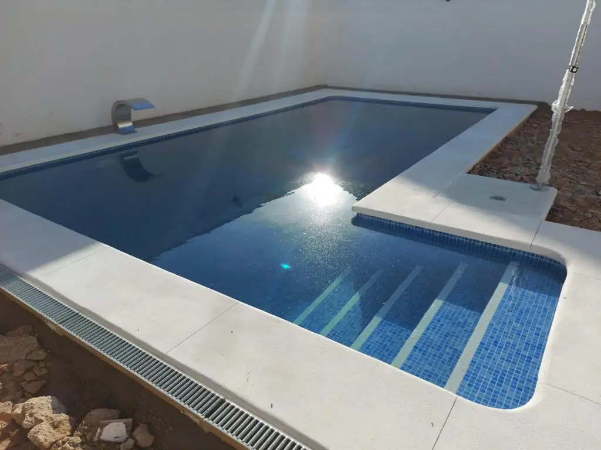
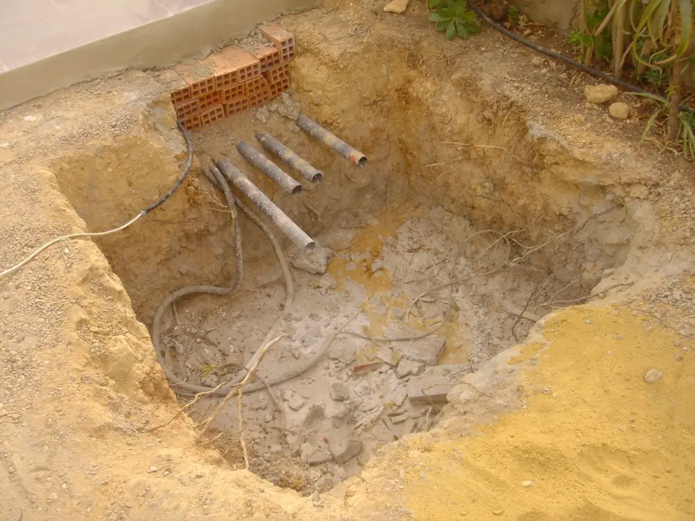
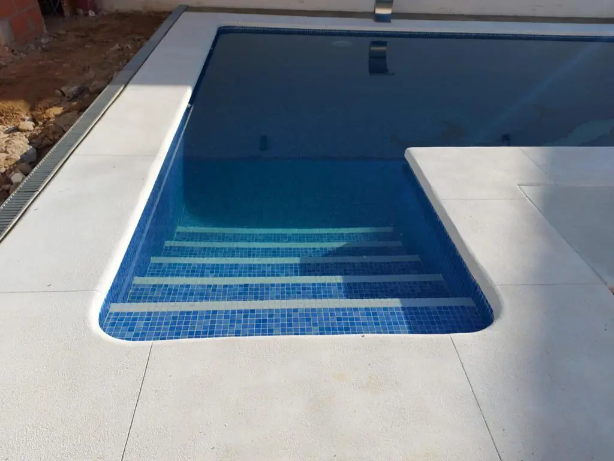
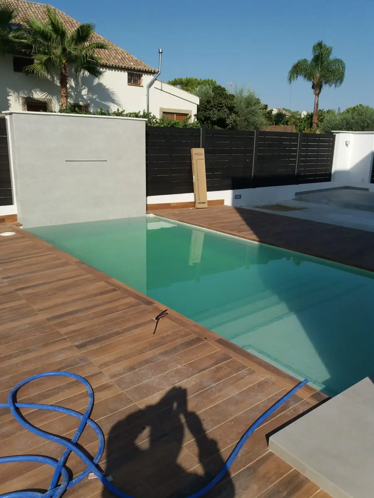
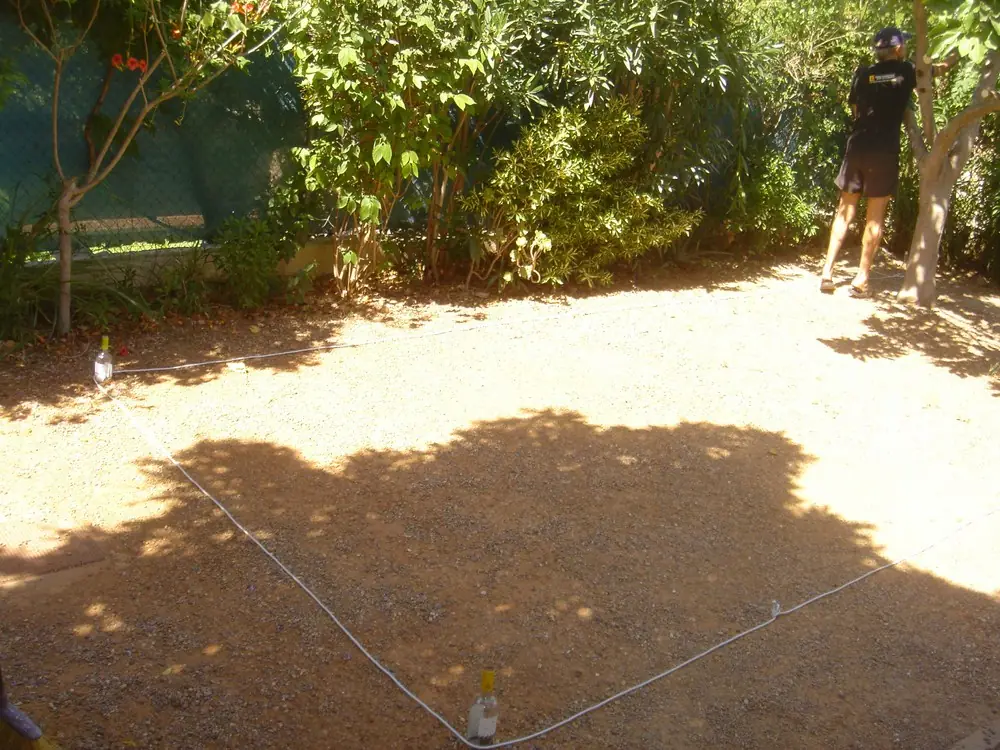
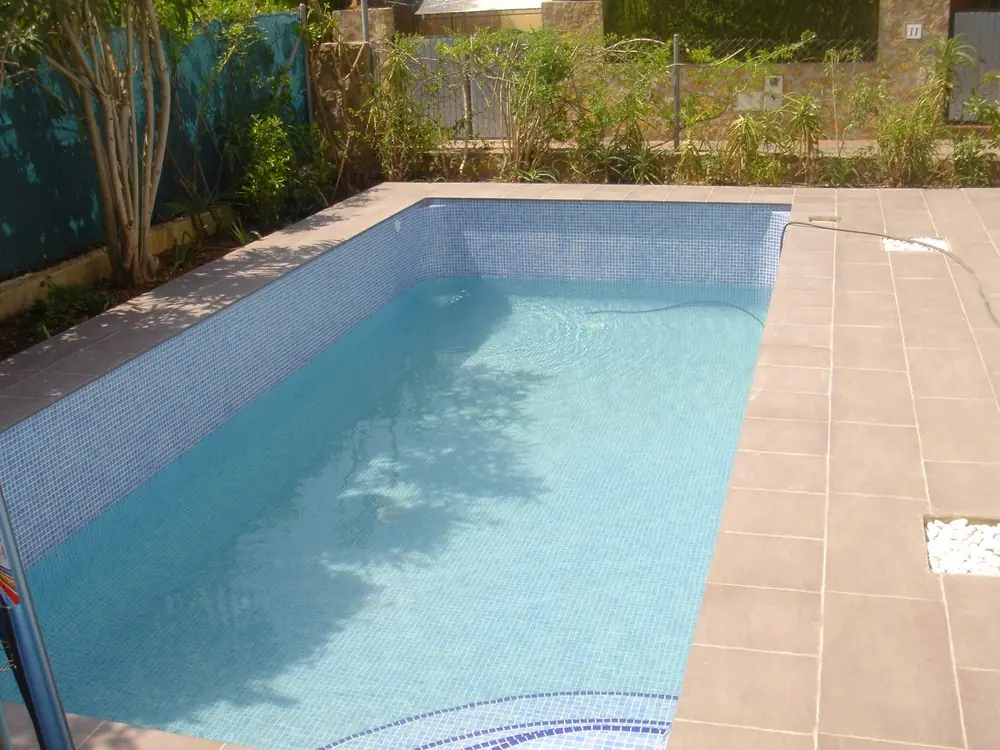
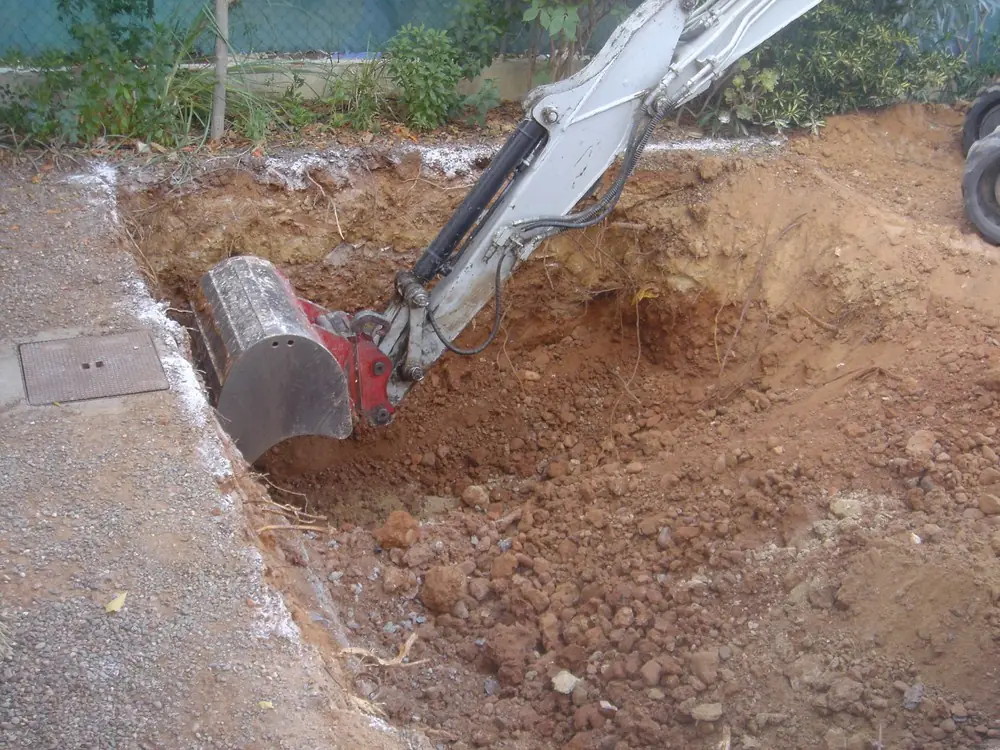

PiscinasAndalusí
Construimos piscinas de hormigón a medida en Sevilla, para casas y comunidades.
Con 15 años de garantía por escrito.
Alcalá de Guadaíra · Sevilla y provincia
- 15 añosGarantía en impermeabilidad
- 2 añosGarantía en depuración
- A medidaCualquier forma y tamaño
- Particularesy comunidades
- Piscinas de hormigón
- Gunitado
- Gresite
- Coronación in situ
- Depuración
- Electrólisis salina
- Reformas
- Impermeabilización
- Cubiertas
- Comunidades
Proyectos destacados
Ver todos los trabajosPensada para tu casa
Sin formas ni tamaños de catálogo.
Tu piscina se adapta a tu jardín, y no al revés.
Diseñamos y construimos piscinas en hormigón proyectado (gunitado), sin limitación de formas ni tamaños, para que elijas la que mejor encaja con el jardín, la casa y su entorno.
Usamos la técnica que más conviene según el terreno y la situación de la vivienda, para entregarte una piscina de alta calidad en el menor tiempo posible y con todas las garantías.
Qué construimos





Nuestro proceso
Así construimos
tu piscina
Baja despacio: la obra avanza contigo. Nueve pasos, un mismo equipo, y en cada uno una foto real de nuestras obras.
Paso 01 / 09
Replanteo

Desliza para construir
Replanteo
Visitamos el terreno, marcamos con estacas y cuerda la forma y la medida exactas, y decidimos contigo dónde irán la escalera y la depuración.
Excavación
Vaciamos el terreno con maquinaria a la profundidad replanteada, dejando el fondo y las paredes listos para trabajar.
Encofrado y ferralla
Montamos la armadura de acero que da forma y resistencia al vaso de la piscina.
Hormigón proyectado
Gunitamos el vaso: el hormigón se proyecta a alta presión y forma una sola pieza resistente que no deja pasar el agua.
Escalera
Levantamos la escalera de obra a medida: recta, lateral o romana, como mejor encaje en tu piscina.
Piedra de coronación
Colocamos la coronación in situ, en piedra natural, artificial o madera, y la playa alrededor del vaso.
Revestimiento de gresite
Revestimos el vaso con gresite en el color que elijas. Es lo que le da a tu piscina su tono de agua.
Depuración
Instalamos tuberías, skimmers, focos y el equipo de depuración, con 2 años de garantía.
Tu piscina
Llenamos, ponemos en marcha la depuración y te entregamos la piscina lista para el primer baño, con 15 años de garantía en impermeabilidad.
Servicios
Más que
una piscina
Todo lo que necesita tu piscina, hecho por el mismo equipo.
- 01
Construcción de piscinas
Todo tipo de piscinas según tus necesidades y posibilidades.
- 02
Piscinas de hormigón
Hormigón proyectado sin límites de forma ni tamaño.
- 03
Reforma e impermeabilidad
Fugas, tuberías, depuradora, skimmers y limpiafondos.
- 04
Gunitado de muros
Para piscinas, muros, taludes, aljibes y depósitos.
- 05
Piedras de coronamiento in situ
Amplio catálogo de tamaños, colores y materiales.
- 06
Equipo de depuración
Instalación y sustitución de equipos completos.
- 07
Electrólisis salina
Desinfección ecológica y segura a partir de sal común.
- 08
Toldos y cubiertas
Lona PVC para proteger la piscina en invierno.
- 09
Accesorios de piscinas
Escaleras, focos, duchas y todo lo necesario.
- 10
Alquiler de máquina de gunitado
Para profesionales y obras propias.
Garantía por escrito
en impermeabilidad
en depuración
Garantizamos la impermeabilidad de los vasos y la depuración como muestra de nuestra profesionalidad y experiencia.
Antes y después
Baja y mira
la diferencia


Obra real · de la excavación al primer baño
Trabajos
Piscinas que
ya disfrutan
Comunidades de vecinos
Piscinas para toda
la urbanización
Construimos y reformamos piscinas comunitarias: impermeabilización, depuración y revestimiento, con la misma garantía que en una casa particular.
Preguntas frecuentes
Lo que nos
preguntan antes
¿Qué garantía tiene la piscina?
15 años de garantía por escrito en la impermeabilidad del vaso y 2 años en el equipo de depuración.
¿Qué forma y tamaño puede tener?
La que encaje con tu jardín. Al construir en hormigón proyectado no hay moldes ni medidas de catálogo.
¿Cuánto tarda la obra?
Depende del tamaño, del terreno y del acceso de la maquinaria. En la visita te damos un plazo cerrado antes de empezar.
¿Trabajáis con comunidades de vecinos?
Sí. Construimos y reformamos piscinas comunitarias con la misma garantía que en una casa particular.
¿Reformáis piscinas antiguas?
Sí. Reparamos fugas, tuberías, skimmers y depuradoras, impermeabilizamos el vaso y renovamos el revestimiento.
¿Cloro o sal?
Instalamos electrólisis salina: el equipo genera el cloro a partir de sal común y el mantenimiento es mucho más sencillo.
¿En qué zona trabajáis?
En Sevilla capital y provincia. Estamos en Alcalá de Guadaíra.
¿El presupuesto tiene coste?
No. Visitamos el terreno y te damos el presupuesto sin compromiso.
Presupuesto sin compromiso
Empieza
tu piscina
- Teléfono658 75 20 78
- Emailinfo@piscinasandalusi.net
- DirecciónOrense 12, 41500 Alcalá de Guadaíra (Sevilla)